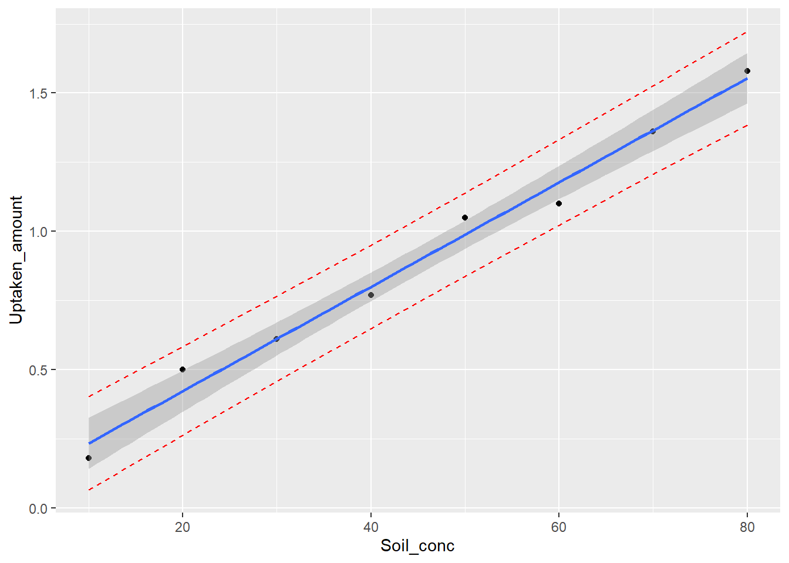
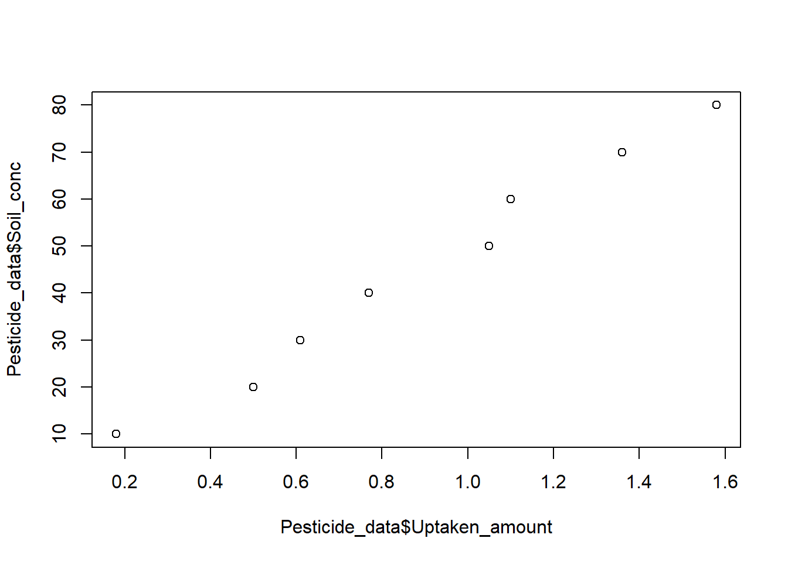
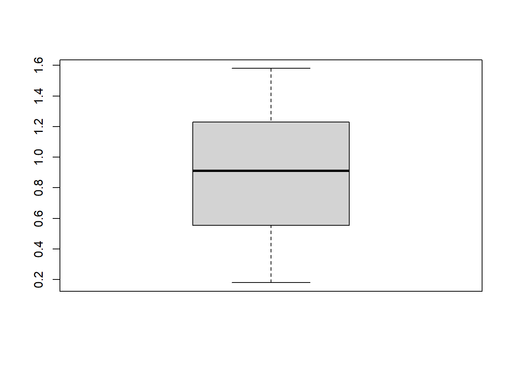
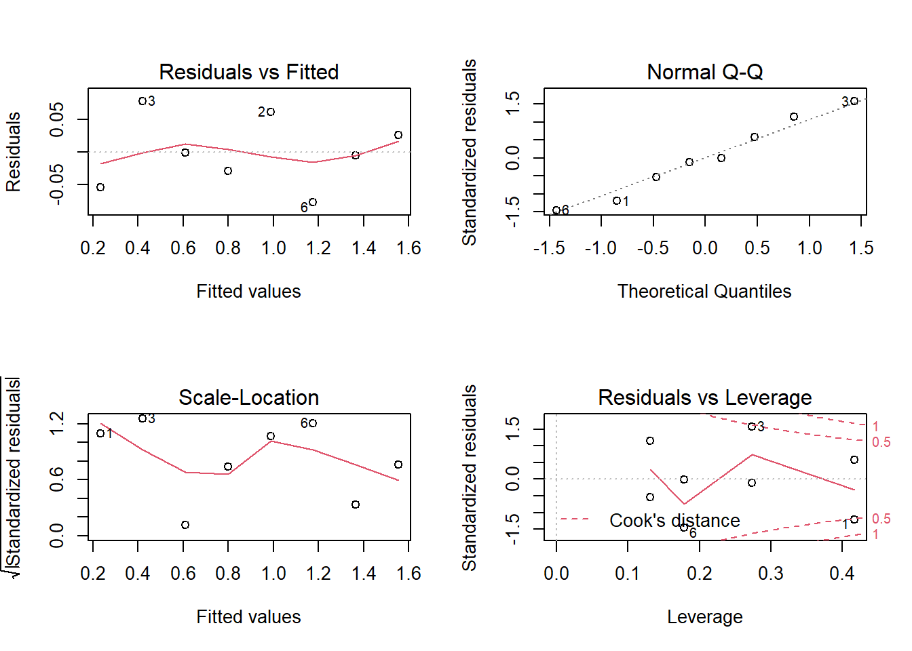

Section 16 Simple linear regression (II)
Section example: Uptake of pesticide by soil

Let’s use the same example from the last section, but this time we will look at the regression model and output in detail.
At a given temperature, uptake of a certain pesticide by soil is usually linearly related to its concentration in soil. To study this process, a researcher made the following observations under a constant temperature of 298 K.
| Observation # | Pesticide concentration in soil | Uptaken amount |
|---|---|---|
| # 1 | 10 |
0.18 |
| # 2 | 50 |
1.05 |
| # 3 | 20 |
0.50 |
| # 4 | 30 |
0.61 |
| # 5 | 80 |
1.58 |
| # 6 | 60 |
1.10 |
| # 7 | 70 |
1.36 |
| # 8 | 40 |
0.77 |
Significance test for linear regression
In the last section, we showed how to compute \(\hat \beta1\) using sample data. Now think about two cases: (1) points nearly follow a line, and (2) points are scattered all around. In which case, do you think the linear relationship is more reliable? You probably will vote for the first case cause it follows a line much better. Ok, the question now is how to decide whether there is any significant relationship between X and Y. This is done by the significance test for linear regression, where we have:
H0: there is no linear relationship between X and Y (\(\beta_1 = 0\))
H1: there is a linear relationship between X and Y (\(\beta_1 \ne 0\))
t-test
Suppose in the unknown population with pairs of X and Y, we may have different uptaken amounts for a given pesticide concentration, something like:
| Observation # | Pesticide concentration in soil (X) | Uptaken amount (Y) |
|---|---|---|
| # 1 | 10 |
0.15, 0.16, 0.18, 0.19, 0.20, ... |
| # 2 | 50 |
0.98, 1.00, 1.01, 1.05, 1.10, ... |
| # 3 | 20 |
0.38, 0.34, 0.49, 0.41, 0.50, ... |
| # 4 | 30 |
0.57, 0.61, 0.65, 0.70, 0.66, ... |
| # 5 | 80 |
1.34, 1.67, 1.74, 1.58, 1.88, ... |
| # 6 | 60 |
1.11, 1.12, 1.33, 1.10, 1.21, ... |
| # 7 | 70 |
1.36, 1.37, 1.41, 1.50, 1.60, ... |
| # 8 | 40 |
0.74, 0.77, 0.78, 0.79, 0.77, ... |
So the observations in the example are just one of many sampling possibilities. For each sample, we could compute \(\hat \beta1\), meaning \(\hat \beta1\) from all possible samples follow a certain distribution. More specifically:
\[\begin{align*} & \frac {\hat{\beta_1}-\beta_1} {SE(\hat{\beta_1})} \sim t_{d.f.=n-2} \\ & SE(\hat{\beta_1}) = \sqrt \frac {MSE} {\sum_{i= 1}^{n} (x_i - \overline x)^2} \\ & MSE = \frac {1}{n-2} {\sum_{i= 1}^{n} ({y_i}- \hat {y_i})^2} \\ & \hat y_i = \hat{\beta_0} + \hat{\beta_1}x_i \end{align*}\]
Here \(\beta_1\) refers to the population slope parameter, and \(SE(\hat{\beta_1})\) is the standard error of sample slopes, and n is sample size.
Assuming H0 is true, one can get the t statistic (21.067) and its corresponding p-value (7.45e-07):
# Observations
Soil_conc <- c(10, 50, 20, 30, 80, 60, 70, 40)
Uptaken_amount <- c(0.18, 1.05, 0.50, 0.61, 1.58, 1.10, 1.36, 0.77)
# Degrees of freedom
# Model, simple linear regression–the slope and intercept
df_regression <- 2 - 1 # 2 parameters
# Error
df_error <- length(Soil_conc) - 2
# Get estimator of beta1 and beta0 manually
Beta1_hat <- cov(Soil_conc, Uptaken_amount)/sd(Soil_conc)^2
Beta0_hat <- mean(Uptaken_amount) - Beta1_hat*mean(Soil_conc)
# Predictions based on the linear model
Prediction <- Beta0_hat + Soil_conc*Beta1_hat
# Variance analysis
SST <- sum( (Uptaken_amount - mean(Uptaken_amount))^2 )
SSR <- sum( (Prediction - mean(Uptaken_amount))^2 )
SSE <- sum( (Uptaken_amount- Prediction)^2 )
# MSE
MSE <- SSE/df_error
# Get SE of residual
print(sqrt(MSE))## [1] 0.05804521# SE of beta1_hat
SE_beta1_hat <- sqrt(MSE/sum((Soil_conc-mean(Soil_conc))^2))
# Get t statistic
t_beta1 <- Beta1_hat / SE_beta1_hat
# Find the two-side p-value
# The pt function gives the Cumulative Distribution Function (CDF)
# of the Student's t distribution in R, which is the probability that
# the variable takes a value lower or equal to a threshold (here |t|).
P_value <- (1-pt(abs(t_beta1), df=df_error))*2
print(P_value)## [1] 7.453208e-07Now, we have a probability of about 7.45e-07 getting a statistic (t) as extreme or more extreme than the observed statistic (21.067), assuming H0 is true. This is a small probability, and is likely due to chance. We can reject H0 given the observations. Thus, there is a significant linear relationship between the two variables.
F-test
Another way to test the H0 is by the overall F-test:
# Get F-statistic
MSR <- SSR/df_regression
F_ratio <- MSR/MSE
# Find the p-value
# The pf() function gives the Cumulative Distribution Function (CDF)
# of the F distribution in R, which is the probability that
# the variable takes a value lower or equal to a threshold (here F_ratio).
# Here we that 1-pf to get the probability that the
# variable takes a value higher than the threshold (F_ratio).
P_value <- 1 - pf(F_ratio, df1=df_regression, df2=df_error)
print(P_value)## [1] 7.453208e-07For simple linear regression, notice that the p-values are identical. This is not a coincidence; this is based on the mathematical relationship between a t-distribuion with ν df and the F-distribution with (1, ν) df.
By using the overall F-test, we reject the H0 also, meaning there is a significant linear relationship between the two variables.
R-squared and adjusted R-squared
We know from the last section, the R-squared measures the proportion of the variation in the dependent variable explained by independent variables for a linear regression model.
\[R^2 = \frac {SSR} {SST}\]
Adjusted R-squared adjusts the statistic based on the number of independent variables in the model. If we add more and more useless variables to a model, adjusted r-squared will decrease. If you add more useful variables, adjusted r-squared will increase.
\[R_{adj}^2 = 1- \frac {(1-R^2)(n-1)} {n - k -1}\] where n is the sample size, and k is the number of variables in the fitting model, excluding the constant.
## [1] 0.9866616# Adjusted R-squared
n <- length(Soil_conc)
k <- 1 # only beta1 counts
R2_adj <- 1 - (1-R2)*(n-1)/(n-k-1)
print(R2_adj)## [1] 0.9844386Understanding the output from R
Some of previous statistics are directly given by the lm() and anova() function, check:
# Fit a simple linear regression model between
# dependent variable (Uptaken_amount) and
# independent variable (Soil_conc)
reg <- lm( Uptaken_amount ~ Soil_conc )
# Print details of the linear model
summary(reg)##
## Call:
## lm(formula = Uptaken_amount ~ Soil_conc)
##
## Residuals:
## Min 1Q Median 3Q Max
## -0.076786 -0.035387 -0.003095 0.034851 0.077976
##
## Coefficients:
## Estimate Std. Error t value Pr(>|t|)
## (Intercept) 0.0446429 0.0452285 0.987 0.362
## Soil_conc 0.0188690 0.0008957 21.067 7.45e-07 ***
## ---
## Signif. codes: 0 '***' 0.001 '**' 0.01 '*' 0.05 '.' 0.1 ' ' 1
##
## Residual standard error: 0.05805 on 6 degrees of freedom
## Multiple R-squared: 0.9867, Adjusted R-squared: 0.9844
## F-statistic: 443.8 on 1 and 6 DF, p-value: 7.453e-07## Analysis of Variance Table
##
## Response: Uptaken_amount
## Df Sum Sq Mean Sq F value Pr(>F)
## Soil_conc 1 1.49537 1.49537 443.83 7.453e-07 ***
## Residuals 6 0.02022 0.00337
## ---
## Signif. codes: 0 '***' 0.001 '**' 0.01 '*' 0.05 '.' 0.1 ' ' 1Making predictions with the linear model
Confidence band for mean response
The confidence band (or confidence interval for the mean response) gives a certain range of the mean response \(\mu_y|x^*\) when the predictor value is \(x^*\). For example, the confidence interval of mean uptaken amount when soil pesticide concentration is 10.
In this case, we use the point estimator of mean response (\(\hat y|x^*\)) at \(x^*\) as the estimation of \(\mu_y|x^*\). We have:
\[\begin{align*} & \frac {\hat y|x^* - \mu_y|x^*} {SE_f(\hat y|x^*)} \sim t_{d.f.=n-2} \\ & SE_f(\hat y|x^*) = \sqrt { MSE \left[\frac{1}{n} + \frac {(x^* - \overline x)^2} {\sum_{i=1}^{n} (x_i - \overline x)^2} \right] } \end{align*}\]
The last term is the standard error of the fit. A general way to write the \(100(1-\alpha)\)% confidence interval (\(\alpha\) is the confidence level, e.g., 0.05) of \(\mu_y|x^*\) is:
\[ \hat y|x^* \pm t_{\alpha/2} SE_f(\hat y|x^*)\]
In R, this can be done with:
## fit lwr upr
## 1 0.2333333 0.1416524 0.3250143
## 2 0.9880952 0.9366978 1.0394927
## 3 0.4220238 0.3477033 0.4963444
## 4 0.6107143 0.5506950 0.6707336
## 5 1.5541667 1.4624857 1.6458476
## 6 1.1767857 1.1167664 1.2368050
## 7 1.3654762 1.2911556 1.4397967
## 8 0.7994048 0.7480073 0.8508022Prediction band for individual response
The prediction band is a confidence interval for an individual predicted response ( \(y|x^*\) ) when the predictor value is \(x^*\). For example, the confidence interval of the individual uptaken amount when soil pesticide concentration is 10.
In this case, we use the point estimator of mean response (\(\hat y|x^*\)) at \(x^*\) as the estimation of \(y|x^*\). We have:
\[\begin{align*} & \frac {\hat y|x^* - y|x^*} {SE_p(\hat y|x^*)} \sim t_{d.f.=n-2} \\ & SE_p(\hat y|x^*) = \sqrt { MSE \left[1 + \frac{1}{n} + \frac {(x^* - \overline x)^2} {\sum_{i=1}^{n} (x_i - \overline x)^2} \right] } \end{align*}\]
The last term is the standard error of the prediction. A general way to write the \(100(1-\alpha)\)% confidence interval (\(\alpha\) is the confidence level, e.g., 0.05) of \(\mu_y|x^*\) is:
\[ \hat y|x^* \pm t_{\alpha/2} SE_p(\hat y|x^*)\]
In R, this can be done with:
## Warning in stats::predict.lm(object, ...): predictions on current data refer to _future_ responses## fit lwr upr
## 1 0.2333333 0.06428203 0.4023846
## 2 0.9880952 0.83705007 1.1391404
## 3 0.4220238 0.26172255 0.5823251
## 4 0.6107143 0.45652200 0.7649066
## 5 1.5541667 1.38511536 1.7232180
## 6 1.1767857 1.02259343 1.3309780
## 7 1.3654762 1.20517493 1.5257774
## 8 0.7994048 0.64835959 0.9504499Plot predictions
We can also plot both kinds of predictions with R:
# Make data frame
Pesticide_data <- data.frame(Soil_conc,Uptaken_amount)
# Build the model
reg <- lm(Uptaken_amount ~ Soil_conc, data=Pesticide_data)
# Make predictions for individual responses
Pred_band <- predict(reg, interval="prediction", level=0.95)## Warning in stats::predict.lm(object, ...): predictions on current data refer to _future_ responses# Update data frame
Pesticide_data2 <- cbind(Pesticide_data, Pred_band)
# Plot
ggplot(Pesticide_data2, aes(Soil_conc, Uptaken_amount))+
geom_point() +
geom_line(aes(y=lwr), color = "red", linetype = "dashed")+
geom_line(aes(y=upr), color = "red", linetype = "dashed")+
geom_smooth(method=lm, se=TRUE)## `geom_smooth()` using formula 'y ~ x'
Procedure of the simple linear regression
As a parametric method, simple linear regression has its assumptions as well:
1. Existence. For any fixed value of \(x^*\), then Y is a random variable with some probability distribution with mean \(\mu_Y|x^*\), variance \(\sigma^2\). The assumption is usually assumed to be true when performing the regression.
2. Independence of Y . The Y values are statistically independent of each other. This is often not valid when X variable is time, which shows a feature called auto-regression. In this case, use time-series analysis methods. The assumption can be tested with the runs test.
3. Linearity. Here we assume the mean of Y is a linear function of X variable.
\[\mu_{Y|X} = \beta_0 + \beta_1 X\] \[Y = \beta_0 + \beta_1 X + \epsilon\] This one can be examined visually - looking for a linear trend. If you fail to see a linear pattern, stop and try other methods.
4. Homoscedasticity (equal variances). The variance of Y variable is the same for all values of X. This one is usually checked after running the model by examining the residuals. If the data fail to meet this assumption, we may be able to use a non-parametric alternative.
5. Normality (of the residuals). The residuals are normality distributed with mean
0. This one is also checked after running the model by examining the residuals.
In the following, we will use the proceeding example to go through each step of the simple linear regression.
1 Check data
Statistical test: independence and possible outliers
Visual checking: linearity
##
## Runs Test
##
## data: Pesticide_data$Uptaken_amount
## statistic = 0, runs = 5, n1 = 4, n2 = 4, n = 8, p-value = 1
## alternative hypothesis: nonrandomness# Scatter plot
# Do you see a linear trend
plot(Pesticide_data$Uptaken_amount, Pesticide_data$Soil_conc)

##
## Grubbs test for one outlier
##
## data: Pesticide_data$Uptaken_amount
## G = 1.53393, U = 0.61585, p-value = 0.4048
## alternative hypothesis: lowest value 0.18 is an outlierIf assumptions are not valid, stop.
2 Write down H0 and H1
H0: there is no linear relationship between X and Y (\(\beta_1 = 0\))
H1: there is a linear relationship between X and Y (\(\beta_1 \ne 0\))
3 Test the slope
Run the simple linear regression model:
##
## Call:
## lm(formula = Uptaken_amount ~ Soil_conc, data = Pesticide_data)
##
## Residuals:
## Min 1Q Median 3Q Max
## -0.076786 -0.035387 -0.003095 0.034851 0.077976
##
## Coefficients:
## Estimate Std. Error t value Pr(>|t|)
## (Intercept) 0.0446429 0.0452285 0.987 0.362
## Soil_conc 0.0188690 0.0008957 21.067 7.45e-07 ***
## ---
## Signif. codes: 0 '***' 0.001 '**' 0.01 '*' 0.05 '.' 0.1 ' ' 1
##
## Residual standard error: 0.05805 on 6 degrees of freedom
## Multiple R-squared: 0.9867, Adjusted R-squared: 0.9844
## F-statistic: 443.8 on 1 and 6 DF, p-value: 7.453e-07Based on the p-value, to reject the H0 or not. If reject, move on to the next step.
4 Check residuals
Look at the model diagnostic plots in R using the plot() function:

For the residual plots, we can check a few of the assumptions:
Residuals vs. fitted plot. Use this to check the linearity assumption. Here a red horizontal line is expected, no distinct pattern is an indication for a linear relationship.
Scale-location (or Spread-Location) plot. Used to check the homoscedasticity assumption. A horizontal line with equally spread points is a good indication of homoscedasticity.
Normal Q-Q plot. Use this one to examine whether the residuals are normally distributed. If residuals points follow the straight dashed line, you are good to go.
5 Report the results
A brief description of the variables you tested
Report the slope, intercept, and R2
Report predictions if necessary
In-class exercises
Exercise #1
Let’s use data from Exercise #3 in Section 13 again.
A researcher wants to study the relationship between Total organic carbon (TOC) and UV absorption around 240 nm. The researcher made 12 water samples from different lakes, and measured the corresponding TOC and UV absorption as follows:
TOC: 1.59, 1.79, 1.00, 0.45, 3.84, 2.30, 1.00, 3.20, 0.80, 2.20, 3.20, 2.10
UV: 0.144, 0.152, 0.113, 0.025, 0.227, 0.149, 0.014, 0.158, 0.042, 0.154, 0.173, 0.095
Follow the procedure of the simple linear regression, perform a formal regression analysis.
Compute the
95%confidence interval for the mean UV absorption when TOC is2.00.When TOC is
2.00, what is predicted UV absorption? Report the95%confidence interval. Why is this interval wider than the previous one?